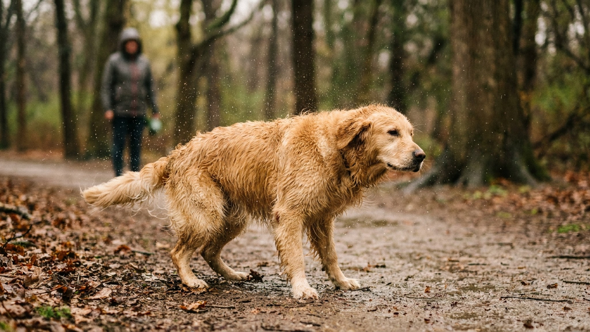

Дождь — не повод пропускать прогулку. Собака нуждается в выходе на улицу каждый день вне зависимости от погоды, и «переждать» — не стратегия. Но у дождливой прогулки есть своя логика: что надеть на собаку, что сделать с лапами, как правильно высушить дома. И отдельный вопрос — откуда берётся этот характерный запах мокрой собаки и можно ли его снизить.
🐾 Дневник здоровья питомца — в кармане
Вес, прививки, симптомы и напоминания в одном приложении. AnimaLife следит за здоровьем питомца вместо вас.
Нужен ли собаке дождевик — зависит от породы и длины шерсти.
Правильный дождевик — с вентиляцией, не перегревающий, с доступом для поводка. Промокший под дождевиком пёс хуже, чем просто мокрый.
В сильный дождь сократите длину прогулки, но не отменяйте её. Собаке нужны физическая нагрузка, запаховые метки, туалет и сама прогулка как социальная активность. Полный отказ от выхода накапливает энергию и рождает деструктивное поведение дома.
20–30 минут активного движения в дождь — достаточно для большинства собак. Обнюхивание при этом считается ментальной нагрузкой: мокрая земля пахнет иначе, насыщеннее. Дождливая прогулка часто более «умственная», чем солнечная.
После дождливой прогулки лапы — первое, что требует ухода. Мокрые подушечки дольше остаются во влаге, кожа между пальцами может раздражаться при регулярном намокании без сушки.
Что делать после каждой дождливой прогулки:
Уход за подушечками — воск или специальный бальзам для лап — особенно актуален в сезон дождей. Конкретный продукт лучше выбрать с ветеринаром с учётом состояния лап вашей собаки.
Вернулись домой — не отпускайте собаку прыгать на диван. Сначала сушка.
Если есть возможность выбирать — выходите в промежутки между основными осадками. Большинство городских дождей идут циклами. Прогулка сразу после дождя часто комфортнее, чем в разгар: воздух свежий, лужи есть, но мокрый дождь уже не хлещет.
Собака не страдает от влажного воздуха после дождя — она прекрасно в нём ориентируется и нередко более активна, чем в жаркую сухую погоду.
Живот, грудь, бока, хвост — всё, что оказалось под дождём, нужно вытереть. Особенно важно у длинношёрстных: мокрая свалявшаяся шерсть на животе и в паху — это дискомфорт и потенциальное раздражение кожи.
Большинство собак быстро привыкают к послепрогулочному ритуалу «пришли — вытерли» и сами подставляются под полотенце.
Это вопрос, который задаёт себе каждый владелец. Ответ — в микробиологии.
На шерсти и коже собаки постоянно живут бактерии и дрожжи. В сухом состоянии они практически не пахнут — их летучие органические соединения остаются связанными. Когда шерсть намокает, вода высвобождает эти соединения, и они быстро испаряются вместе с влагой. Этот процесс и создаёт характерный резкий запах.
Дополнительно к этому работают сальные железы кожи. Их секрет смешивается с водой при намокании и тоже участвует в формировании запаха.
Что снижает интенсивность запаха:
Совсем убрать запах мокрой собаки нельзя — это физиология. Но снизить его до ненавязчивого уровня — реально.
🐾 Не уверены, что это опасно?
Опишите симптом в AnimaLife — AI-ветеринар за минуту подскажет, что в пределах нормы, а когда пора к врачу.
🐾 Понравился разбор?
Подпишитесь на канал — каждый день разбираем по одному тревожному симптому у кошек и собак: что в пределах нормы, а когда пора к врачу. Подпишитесь, чтобы не пропустить разбор, который может спасти здоровье вашего питомца.
Материал носит информационный характер и не заменяет очную консультацию ветеринара.